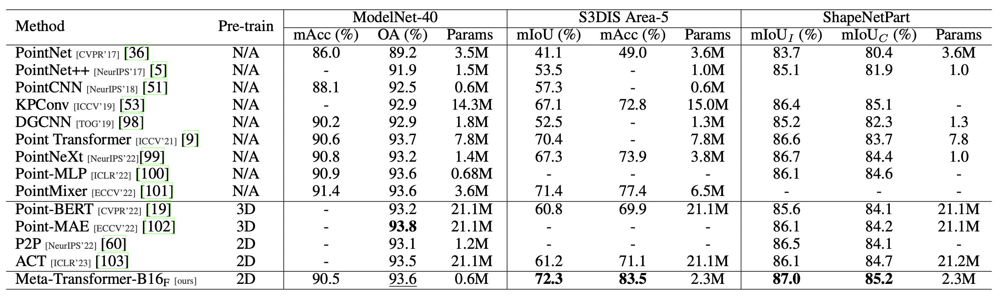

Multimodal learning involves utilizing data from various modalities to improve model capacity. Despite the years of development in this field, it remains challenging to devise a unified framework for processing natural language, 2D images, 3D point clouds, and audio spectrograms due to crucial gaps among these different modalities. This study proposes a novel approach that demonstrates a network with frozen parameters can encode the data from the aforementioned four modalities and achieve favorable performance, resulting in a unified framework called Meta Transformer. Using this framework, the raw input data from various modalities are converted to a shared token space, allowing a subsequent encoder with frozen parameters to extract high-level semantic features of the input data. Composed of three main components: a unified data tokenizer, a modality-shared encoder, and task-specific heads for downstream tasks, Meta Transformer is the first framework for unified learning among the four modalities with unpaired data, to the best of our knowledge. We evaluated Meta Transformer on different benchmarks across modalities, such as ImageNet for classification, GLUE for text understanding, ModelNet-40, S3DIS, ShapeNetPart for point cloud, and Speech Commands V2 for speech spectrograms. These results indicate a promising future for developing unified multimodal intelligence with transformers.
Meta-Transformer can be applied to many application fields, including 3D recognition, nighttime securaity, weather prediction, etc.

Illustration of Unified Multimodal Learning framework for natural language, images, point clouds, and audio spectrograms. An all-to-one tokenizer is used to convert the raw input data from different modalities to a shared token space. Then, a modality-shared encoder with frozen parameters is used to extract high-level semantic features of the input data. Finally, task-specific heads are used for downstream tasks. This framework enables perceiving different modalities with one shared encoder and without paired data.
We propose the meta scheme in (a) containing grouping, convolution, and transformation progress. Then (b)-(e) represents the building blocks applied with our meta scheme on texts, images, point clouds, and audio spectrograms.
We evaluate Meta-Transformer on a wide range of modalities, including 2D images, natural language, 3D point clouds, audio spectrograms, time-series data, etc.
Compared with current state-of-the-art methods, Meta-Transformer also delivers an outstanding performance.

Table 1: Experimental results for text understanding on the GLUE benchmark. We compare existing advanced methods from paraphrasing, sentiment, duplication, inference, and answering tasks, and we report the pre-training settings and performances.
Table 2: Experimental results for image understanding. We conduct experiments in classification, object detection, and instance segmentation tasks on the ImageNet [23], MSCOCO [71], and ADE20K [74] datasets. ∗ denotes zero-shot image classification, † denotes linear probing for image classification, and ‡ indicates the model is pre-trained on ImageNet-22K [23], where Bold and underline indicate best and second best results.
Table 3: Experimental results for infrared and hyperspectral image understanding.We conduct experiments in classification tasks on the SYSU-MM01 and Indian Pine datasets. We report Rank-1 (R@1), Top-1 Accuracy scores, and the number of trainable parameters (Params).
Table 4: Experimental results for point cloud understanding. We conduct experiments on the ModelNet-40 [25], S3DIS [26], and ShapeNetPart [27] datasets. We compare existing advanced methods from classification, semantic, and object part segmentation tasks, and we report the pretraining modality (Pre-train) and trainable parameters number (Param.) of each method.
Table 6: Time-series Forecasting with Meta-Transformers. Following TimesNet, we report the number of trainable parameters and average performances from 4 different prediction lengths, which is {96, 192, 336, 720}.
@article{zhang2023metatransformer,
title={Meta-Transformer: A Unified Framework for Multimodal Learning},
author={Zhang, Yiyuan and Gong, Kaixiong and Zhang, Kaipeng and Li, Hongsheng and Qiao, Yu and Ouyang, Wanli and Yue, Xiangyu},
year={2023},
journal={arXiv preprint arXiv:2307.10802},
}